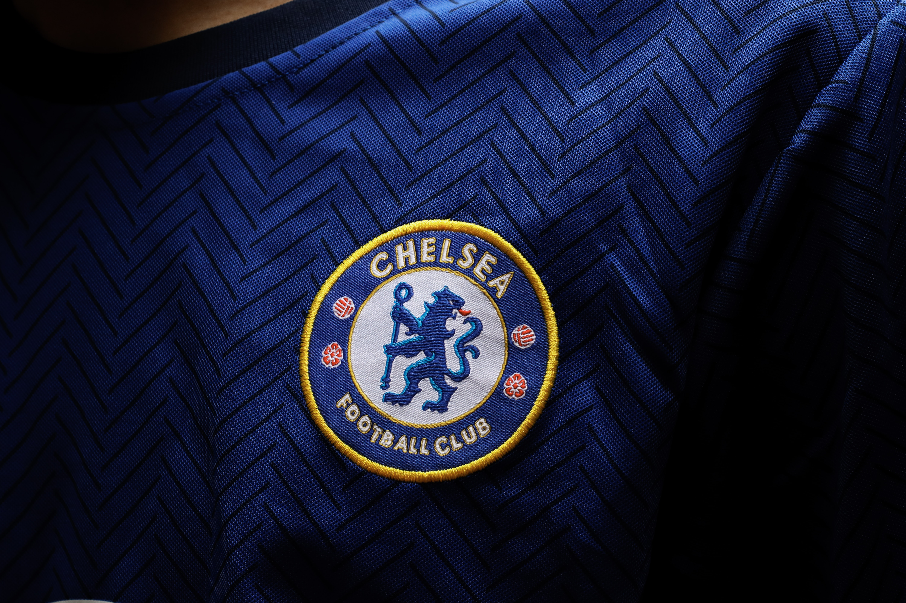

Chelsea Football Club's ground regulations apply to anyone entering the stadium. A copy can be requested from the club.
Chelsea FC is committed to tackling discrimination at Stamford Bridge and in our communities. We take an active role in all the major anti-discrimination campaigns such as Kick It Out, Show Racism the Red Card and all UEFA backed Europe-wide campaigns including FARE.